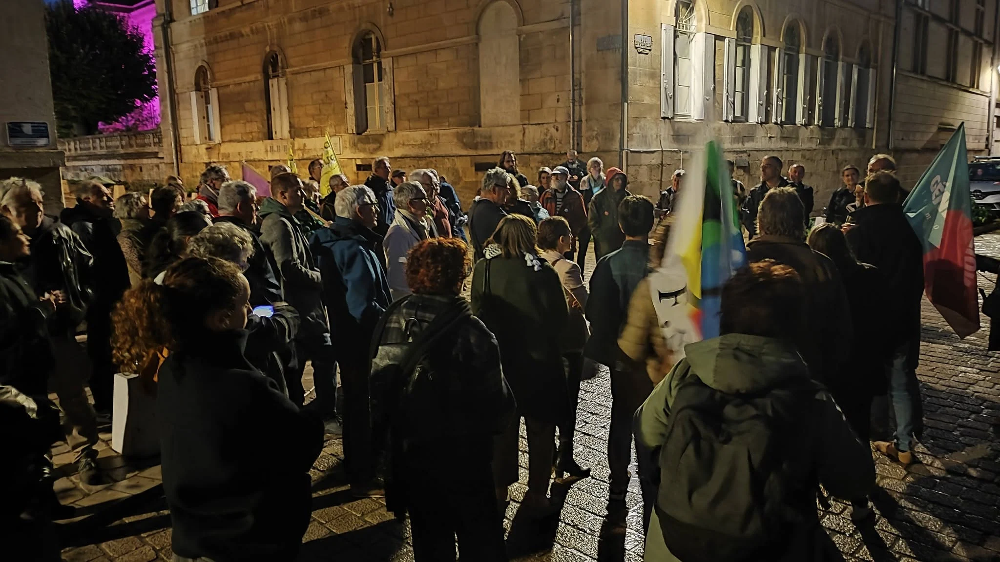
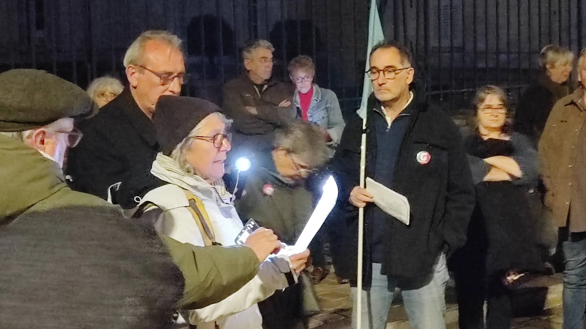
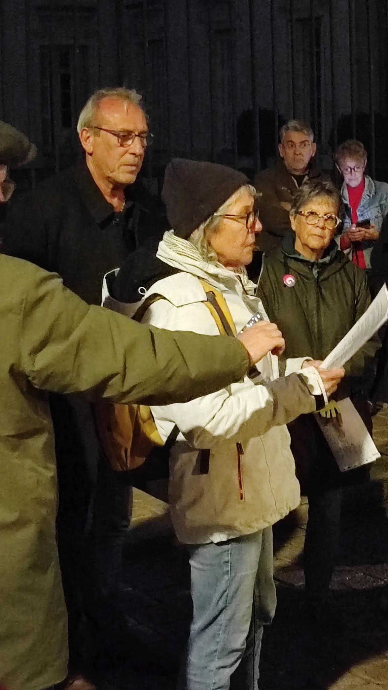

Publication du PCF 79
« Le racisme tue » Nous nous sommes rassemblés à Niort
Date indiquée par Facebook · 26 octobre 2026
Légende originale du PCF 79
Le racisme tue.
Environ 80 personnes avaient répondu à l'appel du PCF 79 lancé
aux citoyens.nes, aux associations, syndicats, lycéens, étudiants, partis politiques progressistes, à se rassembler ce lundi 26 octobre pour dénoncer le crime raciste de Trappes et dire non au racisme, à l'antisémitisme, et à toutes les discriminations.
Dans les prises de parole, les représentants de la Libre Pensée, de Génération.S, des Écologistes, de Nous Toutes et du PCF ont tous dénoncé le racisme qui tue, les paroles racistes qui se banalisent, les préjugés et les discours de haine qui se multiplient de la part de l'extrême droite et de la droite extrême, y compris de la part de certains médias. Il a été rappelé que le racisme n'est pas une opinion mais un délit qui fracture le peuple et peut conduire au pire
« Le ventre est encore fécond d'où a surgi la bête immonde. » Ce message était l'épilogue de la pièce écrite en exil par Bertolt Brecht. Il y rappelle que la défaite militaire du nazisme ne suffit pas à faire disparaître le danger : les causes sociales, économiques et politiques qui permettent au fascisme, à la haine et à la tyrannie de renaître restent présentes.
La République doit garantir à chacun le droit de vivre en paix et en sécurité, quelles que soient son origine, sa couleur de peau ou ses croyances.
#Niort #Trappes #antifascisme #stopracisme #contreleracisme #Solidarite
Repères éditoriaux
Le 26 octobre, nous avons appelé à nous rassembler pour dénoncer le racisme et toutes les discriminations après le drame de Trappes et de La Verrière. Notre compte rendu restitue les prises de parole et les photos de la mobilisation.



Sources
PCF 79 · relevé Meta et fil Facebook · FB-1449808840665698
À lire aussi · 26 octobre. Notre appel à se rassembler contre le racisme